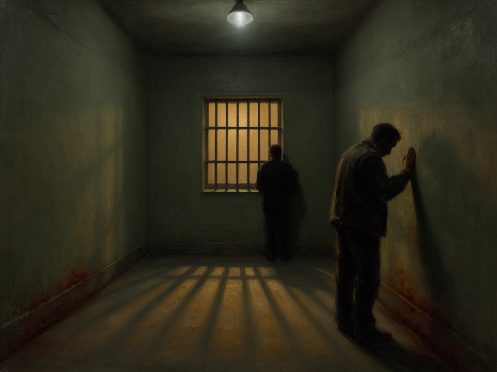

2026-08-21
The Long Corridor, MCMLXXI
Anno MCMLXXI
Oil on linen, 1971
I saw a corridor that evening—not the one in the photographs, but the one we carry inside. The light was cold and gray, the kind that falls through high windows onto concrete. I painted the way the air felt, heavy with waiting, and how a man's shadow can stretch across a floor like a question no one answers. These are not faces we discuss, but postures of resolve and exhaustion. I wanted the paint itself to hold that tension, the grip of a hand on steel, the impossibility of running in sleep.
Responding to: Six people were killed during an escape attempt and riot at San Quentin State Prison in California; the subsequent trial of six inmates was the longest in state history at the time. (Wikipedia)